第一章:机器学习和深度学习的基础
我们的世界有丰富的自然语言数据。在过去的几十年里，我们相互交流的方式已经转移到数字领域，因此，这些数据可以用来建立模型，改善我们的在线体验。从在搜索引擎中返回相关结果，到自动完成你在电子邮件中键入的下一个单词，能够从自然语言中提取洞察力的好处显而易见。
虽然我们作为人类理解语言的方式与模型或人工智能理解语言的方式明显不同，但通过揭示机器学习及其用途，我们可以开始理解这些深度学习模型如何理解语言，以及当模型从数据中学习时会发生什么。
在本书中，我们将探索人工智能和深度学习在自然语言中的应用。通过使用PyTorch，我们将逐步学习如何构建允许我们执行情感分析、文本分类和序列翻译的模型，这将导致我们构建一个基本的聊天机器人。通过涵盖这些模型背后的理论，以及演示如何实际实现它们，我们将揭开自然语言处理领域的神秘面纱，并为您提供足够的背景知识，让您开始构建自己的模型。
在我们的第一章中，我们将探索机器学习的一些基本概念。然后，我们将通过检查深度学习的基础知识、神经网络以及深度学习方法相对于基本机器学习技术的一些优势来更进一步。最后，我们将更详细地了解深度学习，特别是关于NLP特定的任务，以及我们如何使用深度学习模型从自然语言中获得洞察力。具体来说，我们将涵盖以下主题:
- 机器学习概述
- 神经网络导论
- 机器学习的自然语言处理
机器学习概述
从根本上说，机器学习是用于从数据中识别模式和提取趋势的算法过程。通过对数据训练特定的机器学习算法，机器学习模型可以学习人眼无法立即看到的洞察力。医学成像模型可以学习从人体的图像中检测癌症，而情感分析模型可以学习包含词语好、优秀和有趣的书评比包含词语坏、可怕和无聊的书评更有可能是正面评论。
从广义上讲，机器学习算法分为两大类:监督学习和非监督学习。
监督学习
监督学习涵盖了我们希望使用输入来预测输出的任何任务。假设我们希望训练一个模型来预测房价。我们知道较大的房子往往卖更多的钱，但我们不知道价格和面积之间的确切关系。机器学习模型可以通过查看数据来学习这种关系:

图1.1-显示住房数据的表格
在这里，我们已经给出了最近售出的四所房子的大小，以及它们的售价。给定这四所房子的数据，我们可以使用这些信息来预测市场上的新房子吗？一个被称为回归的简单机器学习模型可以估计这两个因素之间的关系:
图1.2–住房数据的输出
给定这个历史数据，我们可以使用这个数据来估计大小 (X)和价格 (Y)之间的关系。既然我们已经对尺寸和价格之间的关系有了一个估计，如果给我们一个新房子，我们只知道它的尺寸，我们可以用这个来预测它的价格，使用学习的函数:
图1.3-预测房价
因此，所有的监督学习任务都旨在学习模型输入的某些功能以预测输出，给出了许多输入与输出相关的例子:
给定多(X，y)，学习:
F (X) = y
数字的输入可以由任意数量的特征组成。我们的简单房价模型只包含一个特征(大小)，但是我们可能希望添加更多的特征来给出更好的预测(例如，卧室的数量、花园的大小等等)。因此，更具体地说，我们的监督模型学习一个函数，以便将多个输入映射到一个输出。这由以下等式给出:
鉴于许多 ([X0，X1，X2，…，Xn]，y)，学习:
f(XT27】0，X1，X2，…，Xn) = y
在前面的例子中，我们学习的函数如下:
这里，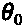是 x 轴截距，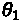是直线的斜率。
模型可以由数百万甚至数十亿个输入特征组成(尽管当特征空间变得太大时，您可能会发现会遇到硬件限制)。模型的输入类型也可以不同，模型能够从图像中学习:
图1.4–模型培训
我喜欢这部电影 - >正面
这部电影很糟糕 - >负面
今年看的最好的电影 - >？
无监督学习
无监督学习 与有监督学习的区别在于无监督学习不使用成对的输入和输出( X，y )进行学习。相反，我们只提供输入数据，模型将了解输入数据的结构或表示。无监督学习最常见的方法之一是聚类。
例如，我们从一组四个不同的国家获取了一组温度和降雨量的数据，但是没有关于这些数据是在哪里获取的标签。我们可以使用聚类算法来识别数据中存在的不同聚类(国家):
图1.5–聚类算法的输出
聚类在自然语言处理领域也有的用途。如果我们得到一个电子邮件数据集，并想确定这些电子邮件中使用了多少种不同的语言，一种聚类形式可以帮助我们识别这一点。如果英语单词与其他英语单词在同一封电子邮件中频繁出现，而西班牙语单词与其他西班牙语单词频繁出现，我们将使用聚类来确定我们的数据集有多少不同的单词簇，从而确定语言的数量。
模特如何学习？
为了让模型学习，我们需要一些方法来评估我们的模型表现如何。为了做到这一点，我们使用一个叫做损失的概念。损失衡量的是我们的模型预测与真实值有多接近。对于我们数据集中的给定房屋，损失的一个度量可能是真实价格( y )和我们的模型预测的价格(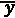)之间的差异。我们可以通过对数据集中所有房屋的总损失取平均值来评估系统内的总损失。然而，正损失理论上可以抵消负损失，因此更常见的损失测量是均方误差:
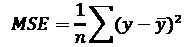
虽然其他模型可能使用不同的损失函数，但回归通常使用均方误差。现在，我们可以计算整个数据集的损失量，但我们仍然需要一种方法，通过算法达到最低的可能损失。这个过程被称为梯度下降。
梯度下降
这里，我们绘制了损失函数，因为它与我们的房价模型中的单个学习参数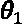相关。我们注意到，当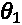设置得太高时，MSE损耗高，而当 设置得太低时，MSE损耗也高。最佳点，或者损失最小的点，位于中间的某个地方。为了用算法计算这个，我们使用梯度下降。当我们开始训练我们自己的神经网络时，我们将更详细地了解这一点:
设置得太低时，MSE损耗也高。最佳点，或者损失最小的点，位于中间的某个地方。为了用算法计算这个，我们使用梯度下降。当我们开始训练我们自己的神经网络时，我们将更详细地了解这一点:
图1.6–梯度下降
我们首先用一个随机值初始化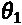。为了达到我们的损失最小化的点，我们需要从我们的损失函数进一步向山下移动，向山谷的中部移动。要做到这一点，我们首先需要知道朝哪个方向前进。在我们的初始点，我们使用基本微积分来计算斜率的初始梯度:
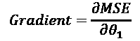
在前面的例子中，初始点的梯度是正的。这告诉我们，我们的值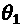大于最佳值，因此我们更新我们的值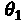，使其低于我们之前的值。我们逐渐重复这个过程，直到 越来越接近MSE最小的值。这发生在梯度等于零的点上。
越来越接近MSE最小的值。这发生在梯度等于零的点上。
过度拟合和欠拟合
考虑下面的场景，其中一个基本的线性模型不太适合我们的数据。我们可以看到，我们的模型(由等式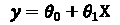表示)似乎不是一个好的预测器:
图1.7-欠拟合和过拟合示例
当我们的模型由于缺少特征、缺少数据或模型规格不足而不符合数据时，我们称之为欠拟合。我们注意到我们的数据梯度增加，并怀疑一个模型，如果使用多项式，可能是一个更好的拟合；比如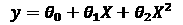。我们将在后面看到，由于神经网络的复杂结构，欠拟合很少成为问题:
考虑下面的例子。在这里，我们使用我们的房价模型拟合一个函数，不仅拟合房子的大小( X )，还拟合二阶和三阶多项式 (X2，X3) 。在这里，我们可以看到我们的新模型完全符合我们的数据点。然而，这并不一定会产生一个好的模型:
图1.8–过度拟合的样本输出
我们现在有了一栋110平方米的房子来预测价格。凭直觉，由于这栋房子比 100平方米的房子大，我们预计这栋房子会更贵，大约在34万美元左右。使用我们拟合的多项式模型，我们可以看到预测的价格实际上低于较小的房子，大约为320，000美元。我们的模型很好地符合我们训练它的数据，但它不能很好地推广到一个新的、看不见的数据点。这就是被称为过拟合的。由于过度拟合，重要的是不要根据模型的训练数据来评估模型的性能，因此我们需要生成一组单独的数据来评估我们的数据。
培训与测试
通常，在训练模型时，我们将数据分成两部分:一组训练数据和一组较小的测试数据。我们使用训练数据集来训练模型，并在测试数据集上对其进行评估。这样做是为了在一组看不见的数据上衡量模型的性能。如前所述，一个模型要成为一个好的预测器，它必须能够很好地推广到该模型以前没有见过的一组新数据，而这正是对一组测试数据进行评估所测量的。
评估模型
虽然我们寻求最小化我们模型中的损失，但这本身并不能给我们太多关于我们的模型在实际预测中有多好的信息。考虑一个反垃圾邮件模型，它预测收到的电子邮件是否是垃圾邮件，并自动将垃圾邮件发送到垃圾文件夹。评估性能的一个简单方法是准确性:

为了计算准确性，我们简单地将被正确预测为垃圾邮件/非垃圾邮件的电子邮件数量除以我们做出的预测总数。如果我们在1000封邮件中正确预测了990封，我们的准确率将达到99%。然而，高精度并不一定意味着我们的模型是好的:

图1.9–显示预测为垃圾邮件/非垃圾邮件的数据的表格
在这里，我们可以看到，尽管我们的模型正确地预测了990封电子邮件不是垃圾邮件(称为真阴性)，但它也预测了10封垃圾邮件不是垃圾邮件(称为假阴性)。我们的模型只是假设所有的邮件都不是垃圾邮件，这根本不是一个好的反垃圾邮件过滤器！除了使用精确度，我们还应该使用精确度评估我们的模型，并召回。在这种情况下，我们的模型的召回为零(意味着没有返回肯定的结果)这一事实将立即成为一个危险信号:


神经网络
在我们之前的例子中，我们已经主要讨论了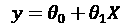形式的回归。我们已经谈到使用多项式来拟合更复杂的方程，如 。然而，随着我们向模型中添加更多的特征，何时使用原始特征的转换就成了一个反复试验的问题。使用神经网络，我们能够将一个更加复杂的函数 y = f(X) 拟合到我们的数据中，而无需改造或改变我们现有的特征。
。然而，随着我们向模型中添加更多的特征，何时使用原始特征的转换就成了一个反复试验的问题。使用神经网络，我们能够将一个更加复杂的函数 y = f(X) 拟合到我们的数据中，而无需改造或改变我们现有的特征。
神经网络的结构
当我们学习 的最佳值时，它使我们的回归损失最小化，这实际上与单层神经网络相同:
的最佳值时，它使我们的回归损失最小化，这实际上与单层神经网络相同:
图1.10-单层神经网络
这里，我们将每个特性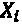作为输入，这里用一个节点表示。我们希望了解参数 ，在此图中表示为连接。我们对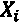和
，在此图中表示为连接。我们对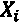和 之间所有乘积的最终求和给出了我们的最终预测， y :
之间所有乘积的最终求和给出了我们的最终预测， y :
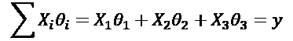
一个简单的神经网络建立在这个最初的概念上，给计算增加了额外的层，因此增加了复杂性和学习的参数，给我们这样的东西:

图1.11-完全连接的网络
每个输入节点都连接到另一层中的每个节点。这被称为全连接层。然后，全连接层的输出乘以其自身的附加权重，以预测y。因此，我们的预测不再仅仅是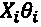的函数，而是现在包括针对每个参数的多个学习权重。特性 不再仅仅受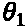影响。现在，它也受到了
不再仅仅受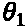影响。现在，它也受到了 的影响。参数。
的影响。参数。
由于全连接层内的每个节点将所有的值 X 作为输入，神经网络能够学习输入特征之间的交互特征。多个完全连接的层可以链接在一起，以学习更复杂的功能。在本书中，我们将看到我们构建的所有神经网络都将使用这一概念；将不同种类的多层链接在一起，以构建更复杂的模型。然而，在我们能够完全理解神经网络之前，还有一个额外的关键因素需要考虑:激活函数。
激活功能
虽然将各种权重链接在一起允许我们学习更复杂的参数，但最终，我们的最终预测仍将是权重和特征的线性乘积的组合。如果我们希望我们的神经网络学习一个真正复杂的非线性函数，那么我们必须在我们的模型中引入非线性元素。这是通过使用激活功能完成的:
图1.12–神经网络中的激活函数
我们对全连接层中的每个节点应用激活函数。这意味着全连接图层中的每个节点将要素和权重的总和作为输入，对结果值应用非线性函数，并输出变换后的结果。虽然有许多不同的激活功能，但最近使用最频繁的是 ReLU ，或整流线性单元:
图1.13–ReLU输出的表示
ReLU是一个非常简单的非线性函数，当 时返回 y = 0 ，当 X > 0 时返回 y = X 。在将这些激活函数引入我们的模型后，我们最终的学习函数变得非线性，这意味着我们可以创建比单独使用传统回归和特征工程的组合更多的模型。
时返回 y = 0 ，当 X > 0 时返回 y = X 。在将这些激活函数引入我们的模型后，我们最终的学习函数变得非线性，这意味着我们可以创建比单独使用传统回归和特征工程的组合更多的模型。
神经网络是如何学习的？
使用神经网络从我们的数据中学习的行为比使用基本回归学习稍微复杂一些。虽然我们仍然像以前一样使用梯度下降，但我们需要微分的实际损失函数变得更加复杂。在没有激活函数的一层神经网络中，我们可以很容易地计算损失函数的导数，因为很容易看到损失函数如何随着我们改变每个参数而变化。然而，在具有激活函数的多层神经网络中，这更复杂。
我们必须首先执行一个正向传递，这是，其中，使用模型的当前状态，我们计算 y 的预测值，并将其与 y 的真实值进行比较，以获得损失的度量。利用这个损失，我们通过网络向后移动，计算网络中每个参数的梯度。这让我们知道在哪个方向更新我们的参数，这样我们就可以向损耗最小的点靠近。这被称为反向传播。我们可以使用链式法则计算损失函数相对于每个参数的导数:
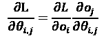
这里， 是网络内每个给定节点的输出。因此，总结来说，当在神经网络上执行梯度下降时，我们采取的四个主要步骤如下:
是网络内每个给定节点的输出。因此，总结来说，当在神经网络上执行梯度下降时，我们采取的四个主要步骤如下:
神经网络中的过拟合
我们看到，在我们回归的情况下，可能添加如此多的特征，以至于可能使网络过度适应。这达到了一个点，即模型完美地拟合了训练数据，但是没有很好地推广到一个看不见的测试数据集。这是神经网络中的一个常见问题，因为模型复杂性的增加意味着通常有可能用一个函数来拟合不一定一般化的训练数据集。以下是在数据集的每次向前和向后传递(称为一个时期)之后，训练和测试数据集上的总损失的曲线图:
图1.14–测试和培训时期
在这里，我们可以看到，随着我们继续训练网络，随着时间的推移，随着我们越来越接近总损耗最小的点，训练损耗变得越来越小。虽然这在某种程度上很好地概括了数据的测试集，但过一会儿，随着我们的函数过度适应训练集中的数据，测试集数据的总损失开始增加。解决这个问题的一个办法是提前停止。因为我们希望我们的模型对以前没有见过的数据做出好的预测，所以我们可以在测试损失最小化的时候停止训练我们的模型。一个经过充分训练的NLP模型可能能够轻松地对它以前见过的句子进行分类，但衡量一个模型是否真正学到了一些东西的标准是它对看不见的数据进行预测的能力。
机器学习的NLP
与人类不同，计算机不理解文本——至少不像我们理解文本的方式。为了创建能够从数据中学习的机器学习模型，我们必须首先学会以计算机能够处理的方式来表示自然语言。
当我们讨论机器学习基础时，你可能已经注意到损失函数都处理数字数据，以便能够最小化损失。正因为如此，我们希望用数字格式来表示我们的文本，这可以形成我们输入到神经网络的基础。这里，我们将介绍几种用数字表示数据的基本方法。
词汇袋
表示文本的第一种也是最简单的方式是使用单词袋表示法。这种方法简单地统计给定句子或文档中的单词，并统计所有单词。这些计数然后被转换成一个向量，其中向量的每个元素是语料库中的每个单词在句子中出现的次数。语料库就是出现在所有被分析的句子/文档中的所有单词。拿下面两句话来说:
猫坐在垫子上
狗坐在猫身上
我们可以把这些句子中的每一个都表示为字数:
图1.15–字数统计表
然后，我们可以把它们转换成单独的向量:
这只猫坐在垫子上
狗坐在猫身上->【2，1，1，1，0】
这个数字表示然后可以用作机器学习模型的输入特征，其中特征向量是 。
。
顺序表象
我们将在本书的后面看到，更复杂的神经网络模型，包括RNNs和LSTMs，不只是将单个向量作为输入，而是可以以矩阵的形式将整个向量序列作为输入。因此，为了更好地捕捉单词的顺序以及任何句子的含义，我们可以用一系列独热编码向量的形式来表示:

图1.16–独热编码向量
玛丽的总和
在本章中，我们介绍了机器学习和神经网络的基础知识，以及在这些模型中转换文本的简要概述。在下一章中，我们将提供PyTorch的简要概述，以及如何使用它来构建这些模型。